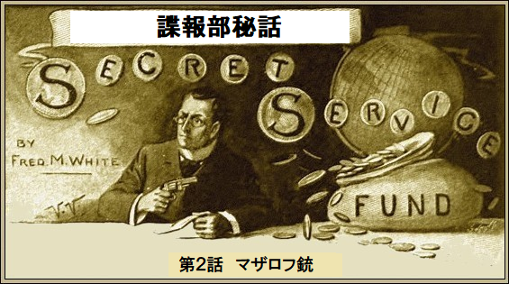
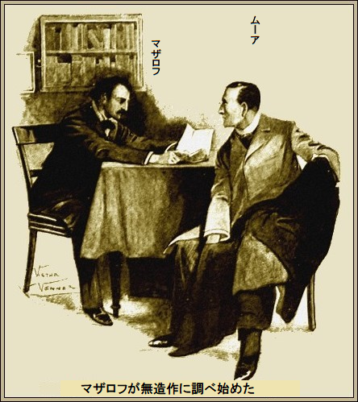
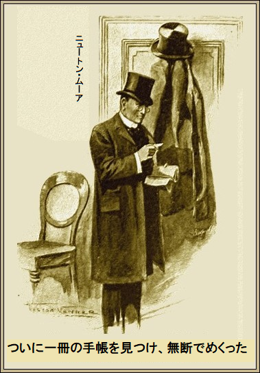
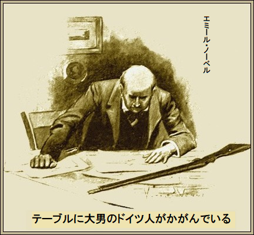
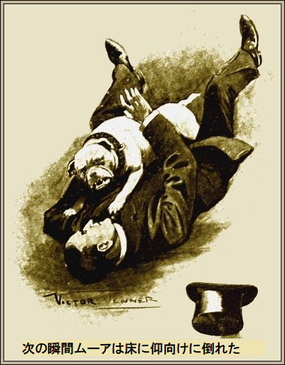
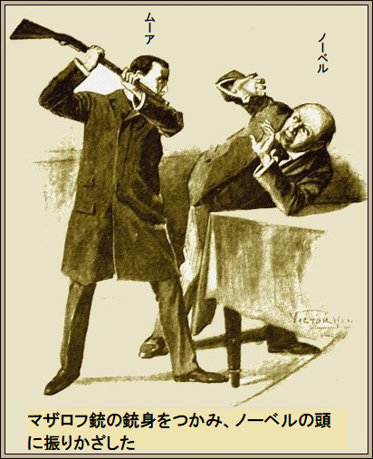

［＃改ページ］
ニュートン・ムーアが暗号電報で陸軍省に駆けつけた。迅速が契約の必須条件だった。ジョージ・モーリイ卿が直ちに本題入り。
「君にピッタリの案件だ。マザロフ銃は聞いたことがないだろう？」
ムーアは知らないと認めた。何かの新型で、その必殺武器に良くないことが起こったのでしょうか、と応じた。
ジョージ卿が説明、
「その通り。君の仕事は回収だ。若い優秀なロシア人が発明した。名前はニコラス・マザロフだ。試射して、実際マザロフから購入した。行く行くは歩兵戦術がひっくり返ることになる。実にすばらしい代物だ。弾丸は液体空気で発射され、薬きょうはない。銃身と弾丸の摩擦がないから、再
「ええ、実際に見たいですね」
ジョージ卿があっさりと、
「ぜひ見てくれ。実は大至急、探してもらいたいんだ。なにしろ銃と設計図が盗まれたから」
ムーアがにんまり。呼ばれた理由がいま分かった。
「ここで盗まれたのですか、ジョージ卿」
「盗まれたのは昨日の午後、だまされたんだ。マザロフが会いたいと言ったけど、わしは忙しかった。では部下のパーキンソン大佐を、と求めた。大佐によれば相当困っているようだったとの事。銃の欠陥が見つかり、弾丸が引っかかりぎみで、射撃手が危険だという。そこで銃と設計図を一日か二日あずかっていいかと尋ねたそうだ。当然反対せず、頼みを聞き入れた。一時間前マザロフがここへ来た時、欠陥は直したかと聞いたら、びっくりのなんの、昨日のことは全く知らないという。実際、夕べ遅くまでリバプールにアリバイがあった。悪知恵の働く悪党が替え玉を演じて、あざやかに奪って行った」
「大佐はマザロフをご存知だと思いますが」
「良くは知らなかったが、間違いなく本人だと認めている。もちろん大佐も仕事で忙しかった。実際マザロフが嘘をつくなんて思わない。マザロフがここへ来るときはいつも糸のほつれた古いインバネス
「マザロフに会いたいですね」
とムーア。
ジョージ卿がベルを押すと、奥の部屋から、額の広い、黒い瞳の若い男がそそくさ現れた。身なりが悪く、率直に言えば汚なかった。ムーアがじろり、全身をさっと検分した。
「この方が噂のロシア紳士だよ、ニュートン・ムーア君」
マザロフがすかさず、
「名前だけはロシア風ですが、英国人です。銃を取り戻していただけたら、感謝してもしきれません」
ムーアが応じて、
「最善を尽くしますよ。ところで、ちょっと立ち入ったことを
ムーアはこの男を信用した。ほんとのことを話していると確信した。マザロフを通りに誘い、腕を取った。
「宿まで案内してください。いろいろ質問します。まず、一番重要なことですが、あなたの知る限り、誰か新型銃のことを知ってますか」
「一人もいません。二年前、友達が一人いましたが、完成直前の物を見ていますけど、死にました」
「誰かほかの人にしゃべったかもしれませんね」
「かもしれません。死んだフランツは陽気なたちでしたが、機密は知りませんでした」
「そうですか、でも誰かに漏らしたかもしれません、大発明
マザロフが深刻にうなずいた。全ては神のみぞ知る。
ムーアが続けた。
「とにかく誰かが知って、成りすましたに違いない。心当たりがないようですのでこれ以上、該当者は尋ねません。探すべきは沈着で悪知恵の悪党、つまり
マザロフが淡々と、
「とても沈着です。だって、しゃあしゃあと宿屋女の前を通り、帽子とインバネス
マザロフが滞在している宿屋の女も認めた。もちろんマザロフが仕事でリバプールへ行ったことを知っていた。だから戻って来た時、驚いた。替え玉は突然呼び戻されたとか何とかブツブツ言って、フロックコートを脱ぎ、背高帽子を取った。マザロフが旅行に使うものとそっくりだった。そして古ぼけた馴染みの
「変じゃなかったですか」
と宿屋女にムーアが尋ねた。
宿屋女のジャレットは太っていたけど、決してぼけているわけじゃない。不幸にも上流階級から落ちぶれて、薄暗い宿屋に住まざるを得なかった。その上、眼も弱ってしまった。かつては男どもが想い焦がれた
ムーがにっこりほほ笑んで、
「だれも責められませんよ。もうご迷惑はおかけしませんから、ジャレットさん」
ジャレットは、告訴すると息まいて立ち去った。そして
ムーアが切り出した。
「きのうよく調べられたと思いますけど、これが例の二度
マザロフがうなずいたので、ムーアは
「何も無いでしょう。両方のポケットに穴があいてますから、何も入れないようにしています」
とマザロフ。
「小物はありませんね」
とムーアが返事しながら、折り畳んだ書類のような薄汚い紙を明かりに掲げ、テーブルにどさっと置いた。マザロフが無造作に調べ始めた。

「私のものじゃありません。見たこともありません」
二十枚以上の紙を
ムーアが、
「最重要物件です。道中、
ムーアがちょっと興奮しているのを見て、マザロフが叫んだ。
「もっと詰めてください。所有者を見つけてください」
「まさに私の仕事です。順当な推論をすれば、この男は新しい喜劇に出演しているか、急に代役を演じることになったのでしょう、さもなきゃ馬車の中で台詞を覚えることなんてしません。私の友人に根っからの芝居好きがいます。多くの劇場に財政的な影響力があります。願望ですが、この友人が特定できるかもしれません。すぐ会いに行きます」
＊
ムーアは直ちにイーバリー通りへ向かった。そこにジミー・マニングツリー先生が住んでいる。幼馴染みの若者で、演劇に
ムーアの説明が終わると、
「この台本の芝居はすぐ当てられるよ。朝食どう？」
ムーアは断った。男を特定するまで食事は体が受け付けない。腹ペコだったが、一口で喉を詰まらせそうだった。煙草を取って、椅子に寄りかかった。その間マニングツリーは眼前のタイプ文字に見入った。
やがて口を開いて、
「もし俺が劇の名前を言ったら、どの俳優か教えないし、名前も教えないよ。だって劇をよく見ていれば自分で出来るから」
ムーアがじれて、
「じゃあ、劇の名前はなんだい？」
「
遂にムーアが、手掛かりに息も絶え絶えに、
「初演は土曜夜だったのか。話ではセスピアン劇場に関わっているな？」
マニングツリーが大げさにウィンクした。ジミー・マニングツリー先生は大した役者だ。
「そういうこと。一万ポンドぶち込んだけど、
ムーアが両手を両膝において居住まいを正し、
「どうも。さらに無理なお願いだが、楽屋に出入りできるようにしてもらえたらありがたいのだが。つまり、裏口へ入れてくれないか」
マニングツリーが応えて、
「まあ、普通そんなことはしないんだが、切実なようだからキミに免じて例外にしてやる。楽屋には分別をわきまえて出入りしないんだ。十時にセスピアン劇場に行くからそのとき名刺を出せば出来るよ。どういうことか知りたいな」
ムーアが静かに微笑んで、
「だと思ったぜ、あとで言うよ。当分口を閉じる。朝食は要らない、どうも。一口も食べられそうにない。この国が好きなら、今晩だけはへまさせないでくれ」
＊
セスピアン劇場はきらびやかな観客で満席だった。特別席は宝石がきらきら。喜劇は
特別席の角から、ムーアは劇の進行を見守った。
第一幕が終わりに近づいた。
「それで私の取り分は？」
と優しく
あっこれは引用だ、台本の第一行だ。特別席の棚に広げて、ムーアの眼前にある。息をのんだ。ここが決め所だ。
第二幕の
「ポール・ギルロイ役は誰？」
マニングツリーが口をとがらせて、
「よせよ。ハーマンを逮捕しようなんて。金ヅルを」
ムーアが応えて、
「そんなことはしない。内密の件は公表しない。ハーマンこそが情報を握っている唯一の人物だ。あの男のことを洗いざらい話してくれ」
「ああ、そもそも国籍はドイツ人、実母はアメリカ人だ。何にでも化ける。警察の手先やら名誉教授やら。四、五ヶ国語を流ちょうに話す。影のあるやつだが、素晴らしい役者だ。君も認めざるをえまい。最終幕の演技まで待て」
「キミの金ヅルのようだな」
「舞台に出ずっぱりだ。劇は二十五分続く。俺の忠告に従い、ひと言も聞き洩らすなよ」
ムーアが声を落として、
「悪いけど聞けないぜ。うっかりハーマンの楽屋に迷い込みそうだ。夢中になってポケットを探るかもな。文句を言うなよ、キミ。俺がご執心だと知ってるだろ。何も言うな。ただ教えてくれ、どっちがやつの楽屋なんだ」
マニングツリーがブツブツ、
「面倒なやつだなあ。いつもわがままなんだから。大きな危険を冒すぞ、責任とれよ。捕まっても助けないぞ」
「かまわん」
とムーア。
マニングツリーは部屋を指差して、とっとと出て行った。
ハーマンの楽屋は無人だった。着付師もいない。おそらくあと三十分は必要ないと知ってのことだろう。ベルがジンとなって、最終幕が上がった。ムーアは薄暗い片隅でハーマンの台詞を聞いた。今がチャンスだ。
一瞬ムーアは
何はさておきハーマンの普段着だ。扉に吊るしてある。しばらく目ぼしいものは見つからなかった。ついに一冊の手帳を見つけ、無断でめくった。書類や手紙があったが、手がかりはない。蓋付ポケットに名刺が一枚はりついている。エミール・ノーベルという名前だ。

ムーアは
名刺の名前はよく知っている。諜報部に勤めるものならどんな新人もエミール・ノーベルの名前は聞いたことがある。だって、欧州の手配写真の中で大悪党だもの。ムーアは名前も顔も両方知っていた。
公文書の盗み、設計書の奪取、このデブ大男のドイツ人は何でもござれだ。犯罪の半分はこの男が裏で絡んでいるらしい。正すのが諜報部の仕事。ムーアはノーベルと今まで会ったことはないが、本件では必ずや会いまみえる予感がする。
相手は悪知恵の働く卑怯者、奇妙なことに耳が不自由ながら、機転が利き、悪知恵にたけている。かてて加えて、ノーベルは名うての化学者だ。諜報部の伝説ではノーベルが人殺しを巧妙に行い、すべて大きな壁にぶち当たって未解決の由。そして今この銃を手に入れたとムーアは確信した。
役者のハーマンが盗みを実行したのはきっと金に目がくらんだためだ。ノーベルを見つけなければ。
道がはっきり見えた。またとない仕掛けの機会だ。もし役者のハーマンがノーベルを本当に知ってるなら、名刺が証拠だが、ことは簡単に運ぶかも。知ってないなら、それまでだ。
ムーアは急いで楽屋口
「お呼びですか、だんな」
とひそひそ。
ムーアが、
「呼んだ、ジョセフ。雑事を一つかたづければ、今晩休んでいいぞ。この名刺を取れ。数分後に、その名刺を自分のものだと言って、向うの楽屋係りに渡せ。顔を見られないように注意しろ。そして強いドイツ語なまりの英語で、はっきりこう言え。役者のハーマンに会いたいと。そうすると楽屋係りはしばらく会えないと答えるはずだ。自分は耳が聞こえないと言って、伝言を紙に書いて渡せ。それからハーマンに渡す名刺を置いて、重要案件で今晩会いたいと言え。ハーマンが出向いて会うようにしろ。以上だ、ジョセフ」
そのあとムーアは劇場に舞い戻った。聞いて安心したのは、伝言を書いて指示通り無事に渡したとのこと。少し経って、更にホッとしたのは、楽屋係りがジョセフの言った通りハーマンに渡した由。
もしノーベルの住所が名刺に書いてあったなら、こんなことは全く不要なのに。住所が分からないから、小細工が必要だった。
もちろんわずかな確率だが、役者ハーマンが諜報員ムーアの
ハーマンは役者らの賛辞を受け、紅潮して笑顔で舞台に立っている。ムーアはじっと、楽屋係りが名刺と伝言を渡すのを見ていた。
ハーマンがブツブツ、
「異常だな。ノーベルさんがここへ来たというのか。どんな恰好だった？」
「
ハーマンはホッとしたようだったが、
「わかった、ブロトン君。誰か馬車を十分以内に手配してくれ。すまんが用意してくれた夕食は
ムーアは時をおかず、劇場を出た。小細工がまじないのように効いた。今や前途は明るい。役者ハーマンはノーベルと大きな仕事をやり、居場所を知っており、前触れもなくそこへ行き、ムーアを導く。ノーベルが今いるところにマザロフ銃がある。たぶんその辺だろう。
当然、小細工した結果、悪党どもが追跡者を躍起になって探すかもしれないが、ムーアにしてみれば敵を脅して情報を取るしかない。ひとたびブツの
生々しく細かいことをあれこれ考えて、ありそうもない想像が膨らみ、ちょっぴり怖くなった。神経がぶるぶる震え、いつも吸ってる煙草のせいで、体が調子っぱずれに怖いほどジンジン鳴った。
しかし今、大喜びしたい気持ちだ。ムーアに狂気、狡猾の精気が湧くときはいつも、聡明で鋭敏な頭脳が成功に向かう時だ。こんな瞬間に、信じられない勇気が出る。前途洋洋な成功を予感した。
一台の馬車がのろのろと汚い通りを進み、路地入口からセスピアン劇場の楽屋口へやってきた。ムーアが呼び止めて乗り込んだ。
「俺が合図するまで動くな。馬車を貸り切るぞ」
御者がニヤリほくそ笑んだ。これは上客、ロンドンの御者が夢見るものの、めったに遭遇しない客だ。やがて役者ハーマンを乗せた馬車がスーッと通り過ぎた。
ムーアが叫んで、
「あとをつけろ。前の客が降りたら速度を落とせ。しかし絶対に止まるな。俺は進行中に馬車から下りる。ともかく金貨を一枚やる。長旅になっても、通帳がある。さあ、あとを追え」
＊
長い旅になった。馬車は高性能馬力を披露することなく、しばらく葬列の速度でのろのろ追跡した。
ハムステッド・ヒースの
ハーマンはずんずん進み、半時間ほどして着いた所は真っ直ぐな真新しい道、クリックルウッドとハムステッドにある丘のふもとだった。大邸宅群の一戸だけ
造りは
役者ハーマンが家の前で立ち止まった。中に誰かいるようだ。通路を進み、正面扉を開き、中に入り、大扉を閉めた。玄関の左部屋には明かりがこうこうと輝いているが、玄関には明かりがない。間違いなくエミール・ノーベルがここにいる。
ムーアは用心して車道沿いに進んだ。そっと正面扉を開けようとしたが、カギがかかっている。
ムーアがブツブツ、
「警戒してるな。やつら混乱してる。今頃ノーベルとハーマンは一杯食わされたと察し、理由を悟ったかも。性格判断すれば、勇気どころか大胆なのが役者ハーマンの特徴。やつは
ムーアに聞こえたのはノーベルの太い声だけ、当然ハーマンは手話で応じている。長い間、これが続いた。
その間ムーアは全く何もしてないわけじゃない。既にハーマンの泳ぐ目や、弱気な口元に目を付けていた。品定めして、この男は、こと我が身の安全に関する限り、他人を顧みない。
ムーアがつぶやいて、
「とにかくあそこまで行こう。もし、ハーマンが手持ちの情報をノーベルに言わず、だまされたと悟ったら、やつはきっとノーベルには何も告げず、見捨てるはず。その際、ノーベルの耳が遠いことが重要な点だ。やつが家に入ったとき、ここに使用人はいなかった。俺にとっちゃ後で都合がいい。間違いなくノーベルはこの家を隠れ家として買った。とにかくロンドンよりずっと安全だ。おそらく家具はほとんどなく、いつでもずらかれる。今は家に侵入する方法を見つけることだ」
ムーアが玄関窓のガタついている窓枠を、頑丈な折り畳みナイフでこじ開けようとしている間、目指す部屋で会話が行われていた。
その部屋は家具が十分備わり、居間になっており、明かりが
頭がでかく、毛がなく、大きな赤ら顔、眼は冷たい青色、口元はサメのよう。

役者ハーマンがノーベルに触れると、ノーベルがハッと見上げた。
「脅かすなよ。私の神経は他人が言うほど太くないんだ。よくないことか？ キミ」
とノーベル。
「よくないって？ 俺を呼びつけておいて」
とハーマン。
ノーベルが首を左右に振った。聞こえないからだ。
「明日会いに行くつもりだった。私が今晩来ただと。でもキミは劇場だろ。ええ、どういうことだ？」
とノーベル。
役者ハーマンが振り向いて、煙草に火をつけた。手が震え、膝がガクガクだ。完全にだまされてしまった。目の前に危険が迫っている。たぶんつけられてここへ呼びよせてしまった。だがノーベルは何も知らない。どっちみち知らせない。ノーベルが助けてくれてもだ。
「警告しに来た」
とハーマンがノーベルを指でつついた。
「おお、じゃあ危険だ。物音は？」
とノーベル。
ハーマンはしないと手話で身振りした。いままで何も見てない。ただ最後の数時間はつけられている感が強い。今夜は追跡を巻いた自信があるなどとは用心して言わない。ノーベルに警告しに来たことが重要な義務だと言えばいいし、ここでどんな不名誉なことをしているのやら。
ノーベルがハーマンの肩をぽんと叩いて言った。
「キミはいい男だ。朝までにあの銃の設計図をすべて暗記する。そのあと、銃と設計図は破壊する。パリに行ったら、そこで私に指示に従ってくれ。ところで、ブランデーとウィスキーがあるぞ」
ハーマンは何も欲しくないと身振りした。何はともあれ、すぐロンドンに戻らなきゃ。無理してここへやって来た。実際、空き家のどんな音も、割れ鐘のように神経に障る。
ムーアは正面扉が開いてハーマンが出てきたとき、かろうじて隠れた。鍵がカチャリとかかる音を聞いて苦虫をかんだ。ハーマンがあわてて去るのが見えた。
ことはまさに予想通りになった。ハーマンは、でぶの共犯者に何も言わなかった。やつの運命を断つことになる。ノーベルは家にいる。家に当分留まる。役者ハーマンは警告理由を説明しなかった。
＊
一対一になりつつあった。明晰な頭脳・対・狡猾だ。きっとノーベルは攻撃に無防備だ。小銃ほど扱いやすいものはないが、このドイツ人はそれ以上の恐ろしい武器を知ってるし、一流の化学者・兼・科学者だ。
だがやらねばならないし、ムーアはそのつもりだ。静かにやる必要はない。窓枠の留め金に取り掛かった。やがて、カチッと音がして外れ、枠が取れた。直ちに玄関広間に入った。そっと足をおろすと、低い押し殺した唸り声が聞こえた気がした。
玄関広間は真っ暗で、一条の光が向うの部屋から漏れている。はっきりとノーベルがテーブルにかがんでいるのが見えた。またしても低いうなり声だ。
ムーアが暗がりに目を凝らすと、丸い燃えるような
野火がムーアにじりじり近づいてきた。もう引き返して逃げない覚悟だ。ギラギラ眼球が円弧を描いたのを見た次の瞬間、ブルドックが顔にとびかかり、ムーアは床に仰向けに倒れた。

突然、凶暴な牙を光らせて、ムーアのこめかみに噛みついた。刺すような痛みに襲われ、血がだらだら流れた。次に、肉付きのいい分厚い肩に噛みついた。残忍な
だがもう叫び声はあげなかった。無益だと分かってる。考えるだけでも実に恐ろしい。なにしろ助けを全く呼べず、倒れているのだから。
ムーアはゆっくりネクタイに手を伸ばし、ダイヤ・ピンを引き抜いた。高価なピンは普通、鋼鉄から造られている。これを手に持ち武器にして、ブルドックの左前脚の下に伸ばし、ドクドク脈打つ心臓を狙った。ぐいと力を入れ、ピンを頭まで差し込んだ。
ムーアの鎖骨の上で犬がぴくぴく
むくむくと元気が湧き、不意に狂気に襲われた。犬を両腕に抱え、よろよろ部屋にはいると、ノーベルが一心不乱に暗記中。ムーアがテーブルの上にドスンと死体を投げた。
ノーベルは恐怖でひきつった叫び声をあげながら後ずさり。大きな赤ら顔が真っ青になり、青い目に涙が浮かんだ。テーブルの死体を見てから、顔面血だらけの痩せ男を見上げた。テーブルの上にはムーアが探し求めたマザロフ銃があった。
ノーベルが大声で、
「幽霊だ、幽霊だ、どうなってんだ」
ムーアがテーブルのライフル銃と図面を指差して、
「それだ」
と手話。
「知らんな」
とノーベルがブツブツ。
ムーアは手話がうまい。たびたび世話になった。ムーアが手話で応じた。
「ひっこんでろ。朝までにその銃を頭に入れようとしたんだろ。取り戻しに来た。ごちゃごちゃ弁解するな。お前とハーマンのやり方は先刻承知だ」
ノーベルがつぶやいて、
「俺の召使いが……」
「いないぞ、一人ぼっちだぞ」
ノーベルが薄気味悪く笑い、あたかも
空中に甘い臭いがかすかに漂うのに気づいた。次の瞬間、めまいに襲われた。ノーベルの目に邪悪な笑いが踊っていた。
悪魔のような手品が効いている。電気ベルを見ると、白いボタンがなくなって、丸い穴が開き、そこから間違いなく毒ガスが出ている。
ムーアもハンカチを顔に当て、テーブルの図面をひったくり、火の中に投げ捨てた。マザロフ銃の銃身をつかみノーベルの大きな頭に振りかざし、
「この悪党め、俺を殺そうとしたな。窓を開けろ、すぐにだ。さもないと頭をたたき割るぞ」

ノーベルはムーアが手話で脅したので、見つかったと悟り、命令を理解した。ぶよぶよ巨体をゼリーのように揺らし、カーテンを引き、窓を開けた。下は地面、芝が一面生えている。ムーアは、やにわに怒りが爆発し、左のこぶしを突き出し、ノーベルのたるんだ片
肉体の衝撃があった。倒壊するようにノーベルがくず折れた。再びよろよろ立ち上がって、ちらと見れば、全速力で道路へ駆けるムーアの姿があった。
ムーアはハアハア
「我が王国のエッジウェア通りは……、馬車は……。俺はもう倒れる。もう動けない。ありがたい、警官がいる。ロバート、ロバート、酔っ払いの無法者だ。俺がどうなろうと、この銃を離すな。手を貸してくれ。手荒くするなよ。すぐクリックルウッド警察署へ行ってくれ」
了